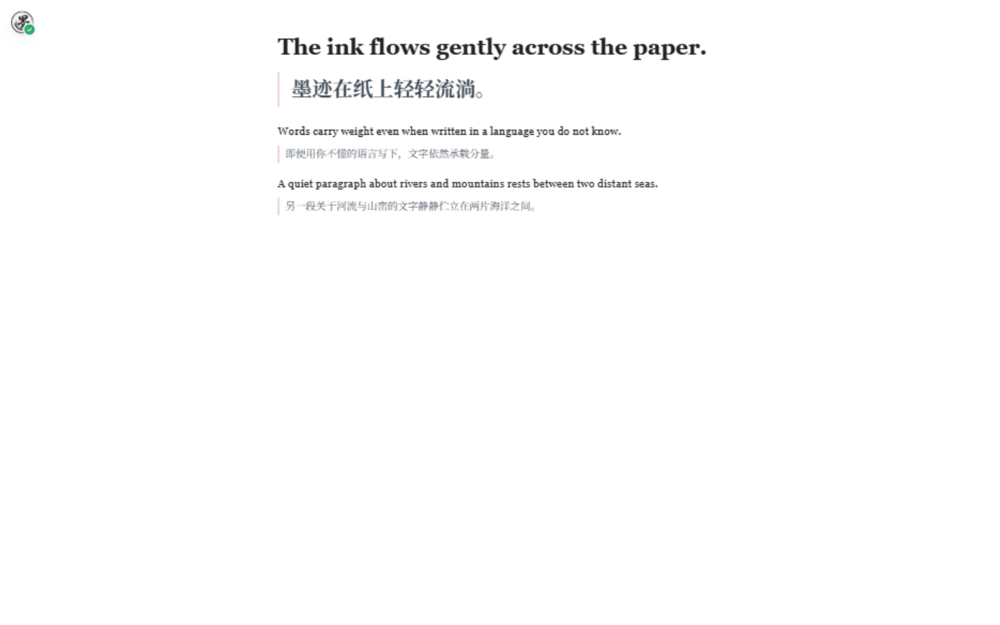
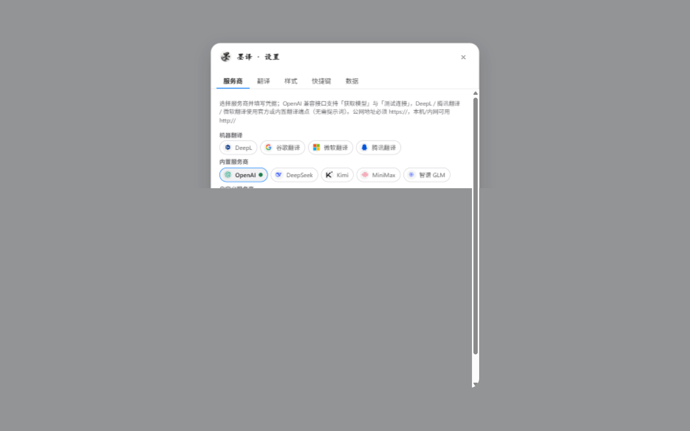

点一下，原文在上、译文在下，逐段显示；再点一下，随时还原。 不改网页，不收集数据，翻译服务由你自己选。
Chrome 插件加载方法见 安装说明 ↗ ｜ 首次使用选「微软翻译」免密钥，开箱即用

不追求花哨，只解决外文网页阅读里的每一件小事。
原文完整保留，译文贴在下方；也可以一键切换成只看译文的「直接替换」。
译文跟着模型输出一段段出现，整页长文也不用盯着加载动画。
视口下方的内容会提前开始翻译，正常速度往下读几乎不用等。
译文本地缓存 7 天，回访零请求、零消耗、即时显示。
界线、下划、高亮、无标记、直接替换；字号、行距、字距、字体都能单独调，深色网页自动提亮。
YouTube 与 X(Twitter) 视频内叠加双语字幕，可开启 AI 断句让字幕成句。
选一个翻译服务，填好点「测试连接」，回网页点悬浮球就行。
样式、快捷键、字幕、数据清理都在一个面板里，改动即时生效。

挑一个适合你的版本，装完记得配一个翻译服务。
chrome-plugin/distchrome://extensions，开启开发者模式dist 文件夹先装 Tampermonkey（Android 的 Via 浏览器自带脚本支持），再打开脚本页点「安装此脚本」。装好后长按悬浮球即可打开设置。
前往 Greasy Fork 安装